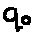

Configure Alphabet. This will bring up the alphabet configuration dialog. Check the boxes
for the symbols that you wish to include in your alphabet, and press Ok.
Configure Alphabet. This will bring up the alphabet configuration dialog. Check the boxes
for the symbols that you wish to include in your alphabet, and press Ok.
In this section, we present a guide to creating and editing machines.
Each machine has an alphabet assocated with it. This is the set of symbols that it can read and write to the tape. In this program, unlike in some Turing machine models there are not separate alphabets for allowable input ("input alphabet") and symbols that the machine can write to the tape ("tape alphabet"). Instead, consider the single alphabet to be the union of these two alphabets.
In the Configuration menu, click on
Configure Alphabet. This will bring up the alphabet configuration dialog. Check the boxes
for the symbols that you wish to include in your alphabet, and press Ok.
When adding new states, a new label will be selected from a set of potential labels. This pool may be configured by choosing a different naming scheme.
In the Configuration menu, click on  Configure Scheme. This will bring up the naming scheme dialog. Choose the naming scheme that you would like to use for the current machine. To rename all of your states to fit the new scheme, click OK & Rename, or click OK to change the scheme without renaming existing states. Some naming schemes will require a rename of all existing states.
To add a state, choose the  Add States mode from the Mode menu
or from the toolbar. Now, clicking on an empty space in a machine window will create a state at
that location.
Add States mode from the Mode menu
or from the toolbar. Now, clicking on an empty space in a machine window will create a state at
that location.
Select the  Add Transitions mode from the Mode menu or
from the toolbar. Click on a state, and drag the mouse to another state without releasing the mouse
button to create a transition between the two states. Create self-loops by both clicking and
releasing the mouse on the same state.
Add Transitions mode from the Mode menu or
from the toolbar. Click on a state, and drag the mouse to another state without releasing the mouse
button to create a transition between the two states. Create self-loops by both clicking and
releasing the mouse on the same state.
Each transition has an input symbol (to the left of the /), and an action symbol (to the right of the /). When the machine is in the 'from' state of a transition, and the symbol on the tape beneath the read/write head matches the input symbol of a transition, the action defined by the action symbol may be performed and the machine state is set to the 'to' state of the transition.
By default, the transition created has an undefined input symbol, '!', which matches nothing, and will prevent the machine from running until replaced with a symbol from the machine alphabet. Similarly, the output action defaults to the undefined action, '!' which prevents the machine from running until replaced with a symbol from the machine alphabet.
Click on the input or output symbol of a transition, and on your keyboard type the character that you want to change the symbol to be. You may only change the symbol to characters that belong to the alphabet of the machine, or one of the special symbols described below. If the blank symbol is in the alphabet, you may type this character by pressing the spacebar button or the underscore key '_'.
A useful input symbol is the otherwise symbol, '?', which matches any symbol, but only if no other transition's input symbol matches. A machine cannot have several otherwise transitions.
Empty epsilon actions are created by pressing 'Shift + E' when the action symbol is selected. These actions cause no change to the tape.
Set the action to move the read/write head left or right by typing the left and right arrow keys, respectively.
Choose the  Eraser mode from the Mode menu or toolbar. Click
on a state or transition to erase it.
Eraser mode from the Mode menu or toolbar. Click
on a state or transition to erase it.
Click on a state and drag it to move it to another location. Transitions can be moved similarly by clicking on their action text or the directional arrows and dragging.
Select the  Choose Start State mode from the Mode menu.
Click on a state to toggle whether it is a start state or not. Only one state may be a start
state.
Choose Start State mode from the Mode menu.
Click on a state to toggle whether it is a start state or not. Only one state may be a start
state.
Select the  Choose Accepting State mode from the Mode
menu. Click on a state to toggle whether it is an accepting state or not. Only one state may
be an accepting state.
Choose Accepting State mode from the Mode
menu. Click on a state to toggle whether it is an accepting state or not. Only one state may
be an accepting state.
A set of states can be selected by dragging a box around them in the  Make Selection mode. To add or remove states from the current set of selected states, click
on them while holding the shift key. All transitions that connect only to other states within the
set of selected states are automatically selected.
Make Selection mode. To add or remove states from the current set of selected states, click
on them while holding the shift key. All transitions that connect only to other states within the
set of selected states are automatically selected.
These selected states and transitions can now be cut, copied and pasted using the appropriate items from the Edit menu. Pasted states are renamed to the first free name that has not yet been used in this machine to prevent duplication of names.
To give a state a custom name, click once on its name. This brings up the appropriate dialog box. States must be uniquely named within a machine - duplicate names are not allowed.
Machines can be saved to a hard disk or other storage medium by selecting  Save Machine from the File menu. Choose
Save Machine from the File menu. Choose  Open Machine from the File menu to retrieve a machine later.
Open Machine from the File menu to retrieve a machine later.